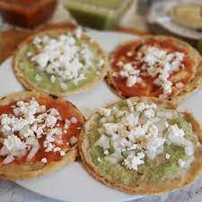
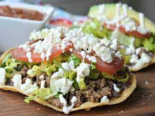
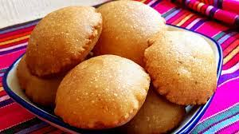

Precio: $10.00

Precio: $12.00

Precio: $11.00

Precio: $13.00
Nuestra misión es ofrecer a nuestros clientes una experiencia gastronómica auténtica y memorable a través de la cocina de antojitos mexicanos. Buscamos rescatar y promover los sabores tradicionales de México, utilizando ingredientes frescos y de alta calidad, combinados con técnicas culinarias tradicionales. Nos esforzamos por crear un ambiente acogedor y amigable, donde nuestros clientes se sientan como en casa y puedan disfrutar de platillos deliciosos que representan la diversidad y riqueza de la cocina mexicana. Además, nos comprometemos a brindar un servicio excepcional, atendiendo las necesidades y preferencias de nuestros clientes con amabilidad y cortesía.
Nuestra visión es convertirnos en el restaurante de referencia para los amantes de la comida mexicana, tanto a nivel local como internacional. Nos esforzamos por preservar la autenticidad de los antojitos mexicanos y convertirnos en un lugar de encuentro para los aficionados a la gastronomía, así como para aquellos que deseen experimentar la cultura culinaria de México. Buscamos expandir nuestra presencia a través de nuevas sucursales y establecer alianzas estratégicas con proveedores locales para garantizar la calidad y frescura de nuestros ingredientes. Aspiramos a ser reconocidos como un lugar donde los sabores tradicionales se fusionan con la innovación culinaria, brindando una experiencia culinaria única que deleite a nuestros comensales y los haga regresar una y otra vez.
Precio: $10.00
Precio: $12.00
Precio: $11.00
Precio: $13.00